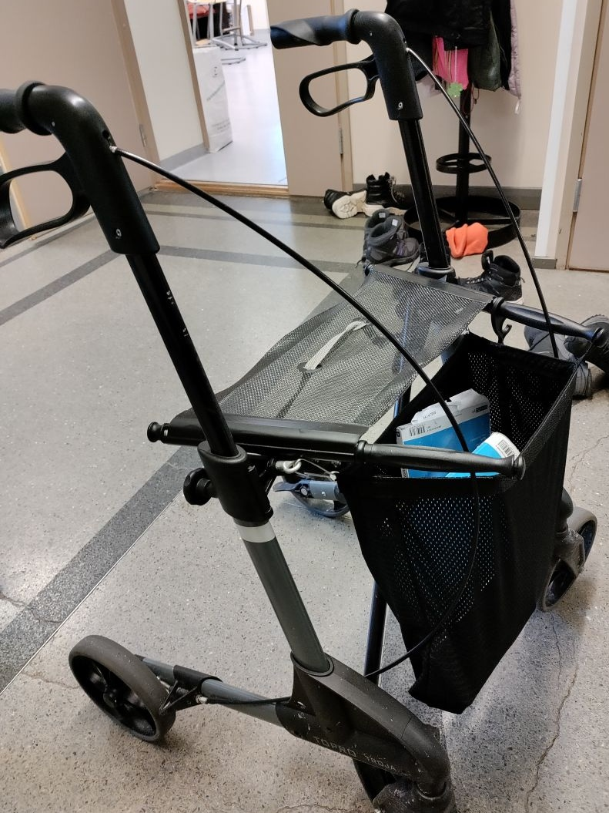
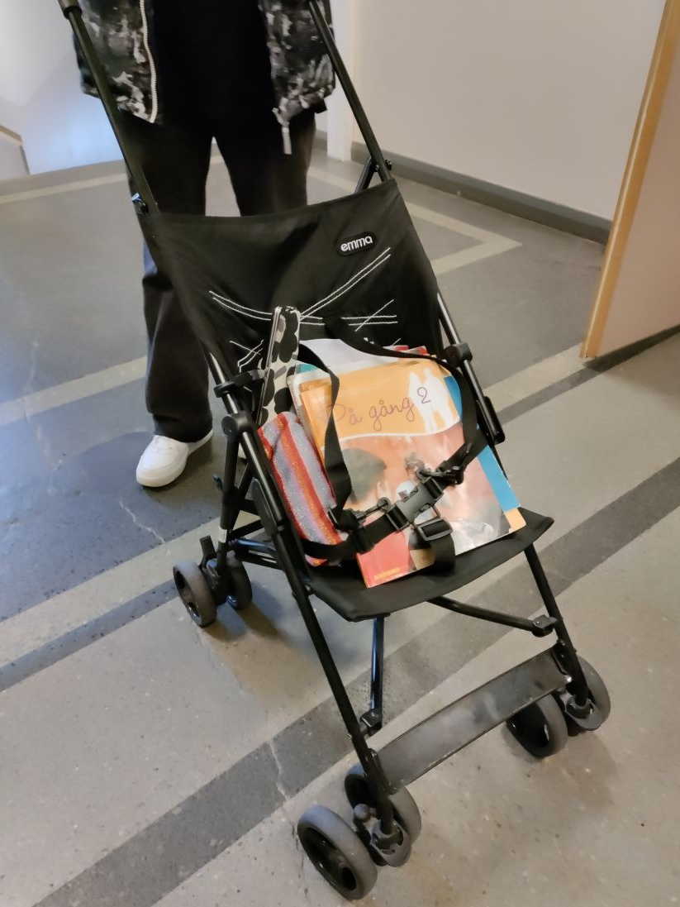
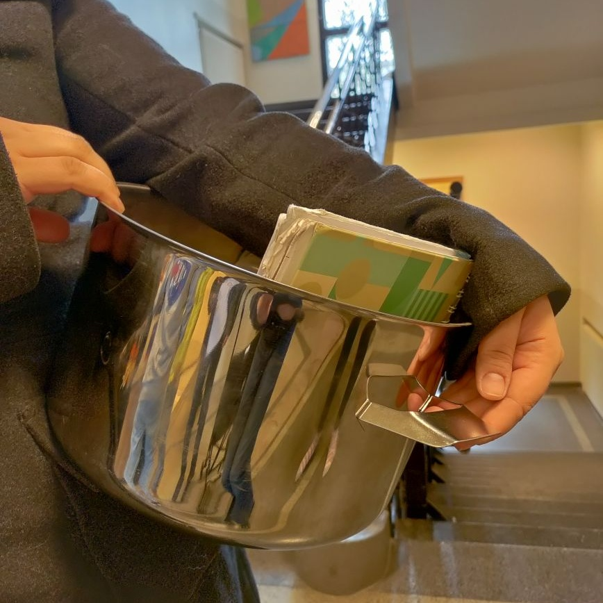

Tänään perjantaina vietettiin Anything but a Backpack Daytä. Jätimme koulureppumme kotiin ja otimme korvikkeeksi jotain muuta hauskaa. Kirjojen kantamiseen pystyy käyttämään melkein mitä vaan, niin oppilaat sekä opettajat ottivat esimerkiksi tyynyliinoja, ämpäreitä tai muuta sellaista.
Haastattelimme kahta oppilasta ja yhtä opettajaa.
Ensimmäinen oppilas oli ottanut rollaattorin "repukseen". Hän ei osannut kertoa mikä häntä innosti ottamaan rollaattorin, mutta kuitenkin totesi että hän vain otti sen. Hän kertoi että oli saanut lähinnä positiivista palautetta.
Seuraava oppilas otti lasten rattaat. Hänen perustelunsa sen ottamiseen oli yksinkertaisesti että hän vain halusi. Hän kertoi ettei ollut saanut kommentteja ollenkaan rattaistaan.
Haastattelimme myös erästä opettajaa. Hän oli valinnut kymmenen litran kattilan. Hän kertoi saaneensa inspiraatiota pikkusiskoltaan ja totesivat että se on täydellinen idea. Kertoo kattilan herättäneen "hirveyttä".
Kaikki eivät ottaneet koska unohtivat tai eivät vaan muistaneet. Näimme monia muitakin erikoisia välineitä kuten tuuban, renkaan ja paljon kaljakoppia. Kuitenkaan emme voineet kaikkia haastatella.